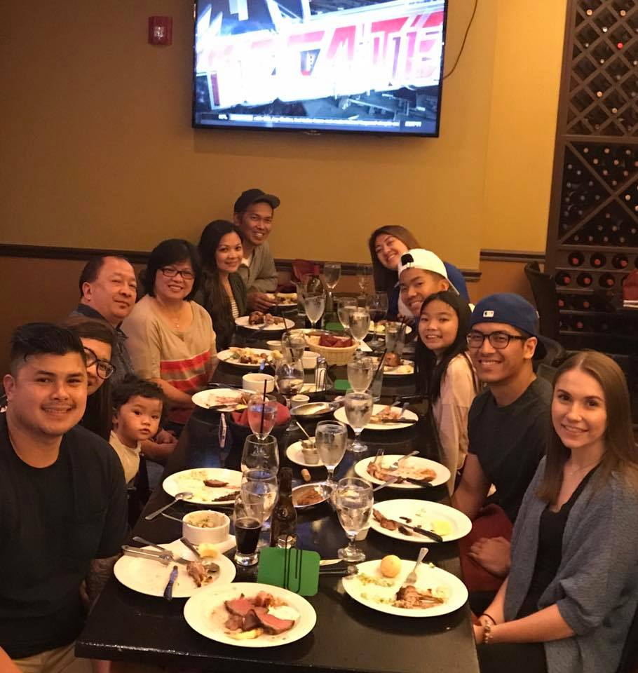

About Me

Hello! My name is Kelvin Tiongson. I am the young jedi wearing the blue cap. In a galaxy far, far away I was a high school math teacher(not far at all actually). I stumbled upon a galaxy known as Northwestern University. In this galaxy, I have chosen to learn about the force within Northwestern's Coding Bootcamp. All jokes aside, I was born in Tamuning, Guam in April of 1992. I moved to Chicago in the cold winter of 1996. I graduated with a BS in Mathematics at Dominican University in the spring of 2014 and a 6-12 teaching certificate in the spring of 2015.
In my free time I enjoy working out, learning more about coding, watching movies and television shows, hanging out with friends and family, reading, and eating delicious food. I LOVE BASKETBALL! I like to occasionally shoot hoops and break ankles of my local community.